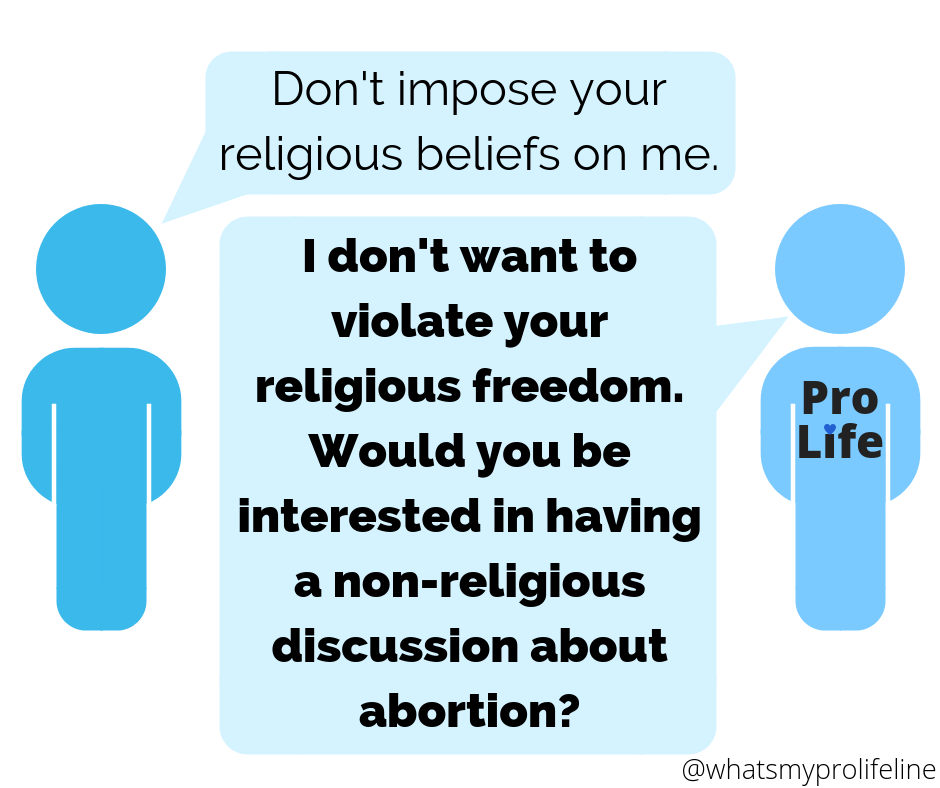

Abortion isn't a religious issue any more than infanticide is a religious issue. Maybe your pro-life convictions are grounded in religion, and that's okay. But keep in mind that there are non-religious reasons to be pro-life too. (Check out @Secular Pro-Life!) Many of our pro-choice peers find non-religious arguments more persuasive. Do your part to make all your conversation partners feel welcome, regardless of their faith or lack of faith.